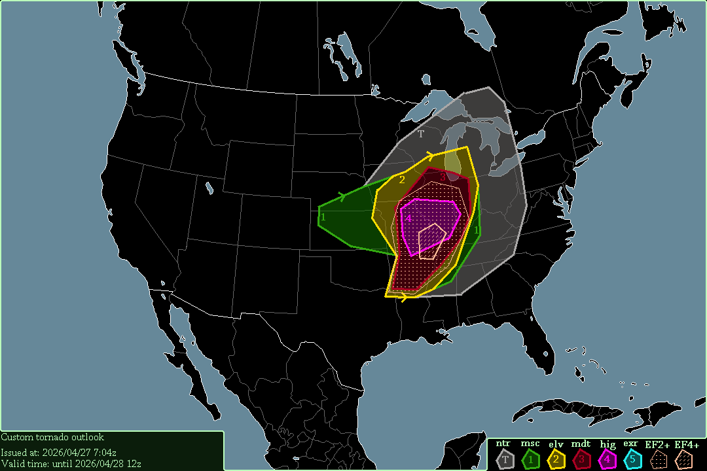

A significant tornado-outbreak with possible violent tornado(es) is expected from Illinois to Arkansas, & from Missouri to western Kentucky, starting at 17:00 UTC, 2026/04/27.
A small tornado-threat exists with storms from yesterday in Kansas & southern Nebraska, starting now.
A major tornado-outbreak is expected from Illinois to Arkansas today, as STP values soar above 4 in most of the risk area. CAPE in Arkansas reaches 3000-3500 J/kg, which makes up for Arkansas' 0-3km SRH of only 200-250 m²/s². Missouri is in a sweet spot, with CAPE of 2000-3000 J/kg overlapping with SRH of 300 m²/s², which will spawn STP values of 6-8 in southeastern Missouri. STP in Arkansas may also reach 6-8, but due to the lower SRH, I have not included Arkansas in the high-risk.
-- Cenn Devel, 2026/04/27 7:04z.